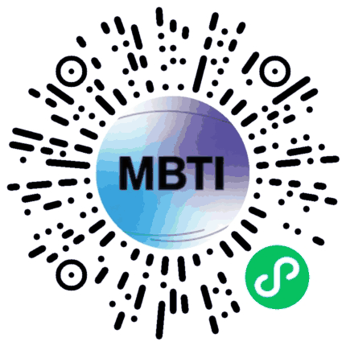

测的到底是什么
四个维度，四组偏好
每个人在每一组上都有偏好，但不是非黑即白。 题目按四个维度各 7 题分布，最后比一比两边的数量， 多的那一边就是你的倾向。
十六型图鉴
一个字，先认出你
每种人格先给一个字：温柔版是网友的善意总结，毒舌版是他们的真实吐槽。 点开任意一型，看白话解读、优势、坑，和适合的工作。
先点燃别人，再照亮自己
“我的快乐，就是帮你成为更好的你。”
富有魅力，有感染力，天生的领导者。能敏锐地感知他人的情感和需求，并帮助他人成长。
像不像你身边这个人
- 他是朋友中的 “精神领袖” ，说话特别有感染力，能统一大家的想法，带着团队往一个目标前进。
- 他跟你聊天后，你总会觉得 “他比我自己还懂我” ，并且浑身充满了干劲和希望。
- 他有一种 “大家长”般的气场 ，本能地想去照顾和保护团队里的每一个人。
- 他内心有一套强烈的 “是非观” ，并致力于让现实世界变得更符合他的理想。
核心特质
- 人形“励志充电宝”：天生善于激励和鼓舞他人，是团队士气的保证。
- 人际关系“读心者”：能敏锐地洞察每个人的情绪、需求和潜力。
- 和谐的守护者：极度重视人际关系的和谐，会主动调解矛盾，营造积极的氛围。
天然优势
- 灵魂鼓舞师：领导力强，能清晰地描绘共同愿景，激励大家为之奋斗。
- 社交艺术家：情商超高，沟通能力一流，能和各式各样的人建立深度连接。
- 暖心大家长：富有同情心，真诚地关心他人的福祉，并提供实际支持。
- 金牌演说家：表达清晰、有说服力，善于用语言打动人心。
- 热情似火：对人和理想充满激情，这种能量极具感染力。
容易踩的坑
- 理想主义“患者”：容易对人或项目投入过高的期望，当现实不符时，会感到深深的失望。
- 玻璃心：非常在意他人的评价和反馈，批评会让他们怀疑自己的价值。
- 能量透支：过度关心他人，常常忽略自己的需求，直到身心俱疲。
- 抉择困难户：当需要做出可能伤害某人感情的决定时（比如裁员），会异常痛苦和纠结。
- 忘了爱自己：把所有人的需求都放在自己之前，最终可能导致 burnout（精疲力尽）。
适合的工作
所有需要 激励他人成长、促进沟通与和谐 的领域。 比如：老师、培训师、心理咨询师、人力资源、团队领导、政治家、牧师。他们是人心的凝聚者和成长的催化剂。
真心建议
- 1. 在帮助全世界之前，请先拯救你自己。把你的需求也放在清单的首要位置。
- 2. 接受这个世界和他人本来的不完美，这会让你活得更轻松、更有韧性。
- 3. 把批评看作“改进的礼物”，而不是对你个人的否定。
- 4. 练习果断决策，有时为了更大的目标，需要勇敢地做出艰难的选择。
总而言之，ENFJ是那种天生就能点亮他人、引导方向的领导者。他们或许会因为太过操心而累着自己，但他们无私的奉献和强大的感染力，能帮助周围的人发掘出自己都未曾察觉的潜力。如果你有一个ENFJ的朋友或领导，你是非常幸运的！
六维工作画像 看雷达图
综合 88.3 · 全站第 1 名 · 最强 创新适应 92 · 最弱 执行落地 80
定了就推到底
“效率就是生命，犹豫就是浪费。我的眼里只有目标和达成目标的路径。”
天生的领导者，果断、高效、目光长远。善于组织人和资源，实现目标。有时会显得专横。
像不像你身边这个人
- 他仿佛是 “天生总经理” ，在任何一个团体里，都会迅速成为发号施令、掌控大局的核心。
- 他 眼光毒辣 ，能迅速看清一个项目的核心关键和未来潜力，并制定出清晰的战略路线图。
- 他无法忍受 低效和蠢笨 ，对于拖沓的行为和模糊不清的指令会显得极其不耐烦。
- 他崇拜 能力和结果 ，只要你能力强、出活好，你就是他最好的战友。
核心特质
- 人形“战略规划局”：大脑就像一部高性能计算机，不断在评估资源、制定策略、优化流程，以最高效的方式达成目标。
- 气场强大的“卷王”：天生自信爆棚，气场强大，不仅自己卷，还能带着（或者说逼着）整个团队一起卷向胜利。
- 结果导向的“终结者”：一切行为和决策都服务于最终结果，情感和过程在他们看来都是可以为此让步的变量。
天然优势
- 走一步，看十步：强大的宏观战略思维，善于规划和布局。
- 杀伐果断：做决定快、准、狠，绝不拖泥带水。
- 天生领袖：自信果断，能服众，能带队，是天生的领导者。
- 资源整合大师：善于把人力、物力等资源高效地组织起来，用在刀刃上。
- 问题拆解专家：再复杂的问题，也能被他们逻辑清晰地分解、搞定。
容易踩的坑
- 没有“耐心”按钮：对跟不上他节奏的人缺乏耐心，显得急躁。
- 控制欲超强：非常强势，希望一切按他的计划和标准来，有时显得专横。
- 无形装X，最为致命：因能力出众而自然流露的自信，容易被误解为傲慢自大。
- 固执己见：对自己的策略极度自信，难以接受反对意见，显得不灵活。
- 🗣人形“实话粉碎机”：沟通过于直接强硬，就事论事，常常忽略他人感受，容易伤人。
适合的工作
所有需要 战略规划、宏观决策和领导团队 的领域。 比如：首席执行官、企业家、战略顾问、投资银行家、法官、政治家。他们是现实的征服者和组织的构建者。
真心建议
- 1. 世界不是一台绝对理性的机器，给“人情世故”这个变量留点计算空间。
- 2. 你厉害，但团队的成功离不开每一个人，学会真诚地欣赏和感谢同伴的贡献。
- 3. 在发射“实话炮弹”前，给它包上一层“礼貌”的糖衣，这样你的好意见才更容易被接受。
- 4. 偶尔从战场上下来度个假，平衡一下工作与生活，否则再强的引擎也会烧坏。
总而言之，ENTJ是为成就和领导而生的物种。 他们可能显得不近人情、压力山大，但如果你需要一个能带领你打硬仗、夺取胜利的将军，找一个ENTJ，他们能为你开辟一片新天地。---
六维工作画像 看雷达图
综合 87.3 · 全站第 2 名 · 最强 沟通影响 96 · 最弱 团队共情 32
先顾气氛，再顾自己
“看见大家和和气气、开开心心，比我自个儿高兴还重要！”
外向、有爱心、受欢迎。极度注重社交和谐，乐于助人，需要得到他人的认可。是聚会的“黏合剂”。
像不像你身边这个人
- 她是朋友里的 “活动策划中心” ，谁生日、谁搬家，她总是第一个想起来并组织聚会的人。
- 她天生 “爱操心” ，会记得你不吃香菜，会提醒你明天降温加衣服。
- 她非常 在意大家的看法 ，希望被喜欢、被认可，害怕破坏和谐的氛围。
- 她遵循 “常识”和“传统” ，觉得在什么场合就该做什么事，规矩很重要。
核心特质
- 人形“氛围调节器”：对人际关系中的氛围超级敏感，会本能地去维护和谐，是当之无愧的“和事佬”。
- 天生的“活动管家”：特别擅长张罗事情，能把一场聚会、一次旅行的吃住行都安排得妥妥帖帖，面面俱到。
- 现实的“助人主义者”：他们的关心非常实际，不是空口安慰，而是直接帮你解决问题，比如给你做顿饭、帮你接孩子。
天然优势
- 社交天花板：情商高，健谈，能让人迅速产生亲切感和信任感。
- 🤲 体贴入微：观察力强，能注意到别人的需求并主动提供帮助。
- 🗂️ 组织小能手：天生擅长打理事务，让一切井井有条。
- 💝 忠诚靠谱：对家人朋友极度忠诚，是你可以永远依赖的后盾。
- 温暖小太阳：性格温暖，充满正能量，能给人带来情绪价值。
容易踩的坑
- 活在别人眼里：特别在意他人的评价，别人的一句批评能让他们难受好久。
- 害怕改变：喜欢稳定、可预测的生活，突如其来的变化会让他们感到焦虑不安。
- 不爱唱反调：为了维持和谐，有时会回避必要的争论，缺乏一点批判性思维。
- 付出型人格：常常为了满足他人而忽略自己的需求，容易身心俱疲。
- ⚖️ 心太软：在做一些关乎人的艰难决定时（比如批评人），会非常纠结和痛苦。
适合的工作
所有需要 与人打交道、提供支持与服务、维护和谐关系 的领域。 比如：教师、护士、人力资源、客户服务、行政、活动策划、销售。他们是社会温暖的传递者和支持者。
真心建议
- 1. 你的感受和别人一样重要，学会说“不”，设立界限。
- 2. 偶尔为自己活一次，培养一个只属于自己的爱好。
- 3. 把批评当作“改进建议”，别让它否定你的全部价值。
- 4. 在做决定时，试着把“我想要什么”也考虑进去。
总而言之，ESFJ是这个世界温暖的基石。他们或许有点“爱管闲事”，但正是他们的热心和付出，才把我们紧紧联系在一起。如果您有一个ESFJ的朋友，请一定要好好珍惜他，因为他已经把照顾你当成了自己的责任。
六维工作画像 看雷达图
综合 73.8 · 全站第 3 名 · 最强 执行落地 89 · 最弱 创新适应 24
定好的流程，就该走完
“别整那些虚的，赶紧把事儿做完，按规矩来！”
高效、直接、传统。是优秀的组织者和管理者，善于建立秩序和流程，并确保任务完成。
像不像你身边这个人
- 他是公司里的主心骨，有他在，项目进度、人员安排都井井有条。
- 他极度靠谱，答应的事绝对按时按质完成，你永远可以相信他。
- 他看不惯偷奸耍滑和效率低下，会觉得“这怎么能行呢？！”。
- 他喜欢制定清晰的规则和流程，并且认为大家都应该遵守。
核心特质
- 行走的“活规章”：尊重并维护现有的规则和传统，认为这是高效和秩序的保证。
- 效率至上主义者：目标明确，执行力超强，能带领团队以最快速度冲向终点。
- 天生的管理者：善于发号施令、组织资源，能把混乱的局面迅速理清。
天然优势
- 🗂️ 超级管家：组织能力一流，能把复杂的事务安排得明明白白。
- 果断不纠结：做决定非常快，不拖泥带水，尤其擅长做那些“艰难但正确”的决定。
- 责任担当：极度有责任心，是自己的担子绝不甩锅，值得信赖。
- 务实派：只关注实际、可行的方案，讨厌空谈和画大饼。
- 团队指挥官：领导力强，能带领团队高效完成目标。
容易踩的坑
- 死板不知变通：过于依赖既定流程，当计划被打乱或需要灵活处理时，会显得很固执。
- 神经大条：不太能细腻地体察别人的情绪和感受，有时说话太直接会伤人。
- 抗拒新点子：对于颠覆传统的创新想法，第一反应常常是怀疑和拒绝。
- ⚖️ 过于严格：对自己和别人要求都太高，有时会显得不近人情。
- 🗣️ 说话太冲：沟通方式直来直去，就事论事，容易让人觉得被冒犯。
适合的工作
所有需要高效管理、严格执行、维护秩序的领域。 比如：项目经理、财务总监、警察、法官、学校校长、公司高管、物流调度。他们是社会这台大机器里最可靠的螺丝钉和操盘手。
真心建议
- 1. 规矩是死的，人是活的，偶尔灵活变通一下，效率可能更高。
- 2. 在讲道理之前，先照顾一下别人的心情，一句温暖的安慰有时比一堆大道理更管用。
- 3. 对新想法稍微宽容一点，别急着否定，说不定里面藏着好机会。
- 4. 你已经做得很好了，偶尔也可以放松一下标准，别把自己和团队逼得太紧。
总而言之，ESTJ是这个世界不可或缺的秩序维护者和执行引擎。他们可能有点“霸道”和“固执”，但如果你需要一个能把事情搞定、值得托付的靠谱伙伴，找一个ESTJ准没错！
六维工作画像 看雷达图
综合 72.2 · 全站第 4 名 · 最强 目标驱动 95 · 最弱 创新适应 24
看得懂别人，也想渡自己
“看得太透，所以活得很累；爱得太深，所以想拯救世界。”
安静而神秘，同时充满理想主义和坚定的信念。富有同情心，能深刻理解他人，致力于实现远大的愿景。
像不像你身边这个人
- 她好像能一眼看穿你的伪装，直接说出你心底真正的烦恼。
- 她跟你聊的不仅是日常琐事，更多的是梦想、人生意义和宇宙规律。
- 她非常理想化，内心有一个完美的世界，并总想为之奋斗。
- 在人群中，她可能很安静，但你能感觉到她有一种温柔的强大和神秘感。
核心特质
- 人形“X光机”：直觉超强，能瞬间洞察别人的动机和事情的真相，第六感准得吓人。
- 行走的“矛盾体”：既感性又理性，既渴望深度连接又需要绝对独处，既活在当下又着眼于未来。
- 低调的理想主义者：内心燃烧着改变世界的火焰，但行动上可能不喜欢张扬，而是用自己安静的方式去影响他人。
天然优势
- 心灵导师：特别会开导人，能引导你找到属于自己的答案。
- 思想深刻：看问题不流于表面，喜欢探讨本质。
- 为爱发电：对自己坚信的理想和事业，有殉道者般的热情和坚持。
- 善解人意：不仅能理解你的感受，更能理解你“为什么会有这种感受”。
容易踩的坑
- 举世皆浊我独清：因为想得太深、看得太透，常常觉得没人能真正理解自己，感到深深的孤独。
- 自我折磨：对自己和世界都要求太高，总纠结于为什么现实达不到理想的模样。
- 能量黑洞：过度共情会吸收别人的负面情绪，社交后需要大量独处时间来“回血”。
- 玻璃心：对批评和冲突非常敏感，容易受到伤害。
- 内心戏太多：心里装着一个宇宙，但大门紧锁，外人只能看到冰山一角。
适合的工作
所有需要洞察人心、赋予意义、帮助他人成长的职业。 比如：心理咨询师、作家、艺术家、教师、人力资源、社会工作者。他们是灵魂的工程师。
真心建议
- 1. 世界和你自己，都不必完美，放松一点。
- 2. 找到一两个能看懂你的朋友，建立你的“心灵加油站”。
- 3. 在仰望星空的同时，别忘了脚底下还有坑，要平衡理想和现实。
- 4. 你的感受是你的指南针，但不是你的枷锁，记得照顾好自己这个“容器”。
总而言之，INFJ是那种万里挑一的灵魂，深沉、慈悲而又充满智慧。如果你遇到了一个INFJ，请珍惜他们，因为他们看到的世界，比你想象的更深远。
六维工作画像 看雷达图
综合 62.6 · 全站第 5 名 · 最强 学习分析 91 · 最弱 沟通影响 17
走到哪儿亮到哪儿
“人來疯，心很软，脑子里的点子比天上的星星还多，但能落地的可能就……你懂的。”
热情、有创造力、社交能力强。自由奔放，能看到生活中的各种可能性，并激励他人。是乐观的探索者。
像不像你身边这个人
- 他是朋友的 “充电宝” ，总能发现你的潜力，用他那溢出的热情把你从emo里拽出来。
- 他是 “社交花蝴蝶” ，能和任何人迅速成为朋友，因为他对人和人的故事有永不枯竭的好奇心。
- 他跟你聊的不是八卦，而是 “你这个想法超棒的！那我们接下来可以……” ，他是天生的梦想合伙人和项目发起人。
- 他兴趣广泛，但最大的爱好可能是……“换爱好”。
核心特质
- 行走的“灵感喷射机”：创造力爆表，擅长把不同事物联系起来，产生无数新奇的联想和可能性。
- 人性的“金牌讲师”：天生就能看到别人身上的闪光点，并擅长用语言激励对方，点燃别人的激情。
- 自由的“追光者”：极度渴望自由和探索，厌恶枯燥的例行公事，永远在追寻下一个让他们心跳加速的目标。
天然优势
- 💡 创意永动机：脑子里总有源源不断的新想法，是团队里的“头脑风暴之王”。
- 🎯 灵魂鼓舞师：特别会鼓励人，能帮你找回自信，看到未来的无限可能。
- 🔄 变通小能手：适应性强，计划赶不上变化？没关系，新计划马上诞生！
- 🤝 人脉连接器：交际能力一流，能轻松把不同圈子的人联系在一起。
- 🌟 热情小太阳：对生活和工作充满激情，这种能量极具感染力。
容易踩的坑
- 📅 组织能力是硬伤：擅长开始，但难以持续和收尾，规划和执行是他们的天敌。
- 💭 理想主义“患者”：容易把项目和关系想象得过于完美，一旦发现现实有瑕疵，就会迅速失去兴趣。
- 🔄 专注力稀缺：新点子太诱人了，导致他们经常从一件事跳到另一件事，留下无数“烂尾工程”。
- 😴 能量透支：对人和事投入太多情感，容易身心俱疲。
- 📝 细节毁灭者：痛恨繁琐的细节和文书工作，常常因此功亏一篑。
适合的工作
所有需要 创意、与人连接和激励他人 的领域。 比如：心理咨询师、培训师、教练、广告策划、公关、作家、主持人、社团发起人。他们是可能性的发现者和梦想的催化剂。
真心建议
- 1. 找个靠谱的“执行者”做队友（比如ISTJ或ESTJ），让他们帮你把天才想法变成现实。
- 2. 试试“三分钟热度”变成“三十分钟专注”，对一件事多一点点耐心。
- 3. 在仰望星空的同时，也记得看看脚下的路，学着在理想和现实之间找个平衡。
- 4. 完成比完美更重要，建立一个简单的待办清单，逼自己搞定收尾工作。
总而言之，ENFP是这个世界上的快乐源泉和梦想家。他们或许有些毛躁和善变，但他们无与伦比的热情和感染力，能点亮你的人生，让你相信一切皆有可能。如果你有一个ENFP的朋友，你的生活绝对永远不会无聊！
六维工作画像 看雷达图
综合 62.4 · 全站第 6 名 · 最强 创新适应 92 · 最弱 执行落地 19
先想十步，再走一步
“脑子永远在下一盘大棋，懒得在琐事和人情上浪费时间。”
富有战略眼光、思维严谨、有强大的驱动力来实现自己的想法和目标。凡事都会制定计划，是完美主义者。
核心特质
- 人形“超级计算机”：他们看任何问题，都像是在脑子里构建一个数字孪生模型，推演各种可能性，找出最优解。
- 效率至上主义者：对他们来说，一件事只有“高效”和“低效”之分，没有“喜欢”和“不喜欢”。感情？那是在不影响效率的前提下才考虑的东西。
- 终身学习的孤狼：他们渴望知识，不断给自己“升级系统”。他们不需要太多朋友，只需要少数几个能跟得上他们思路的“队友”。
天然优势
- 走一步，看十步：强大的战略思维，能预见未来的趋势和潜在的麻烦。
- 一眼看穿本质：能迅速从混乱中抓住核心问题，讨厌浮于表面的讨论。
- 为达目的，使命必达：一旦设定目标，就会像导弹一样锁定，不达目的不罢休。
- 行走的百科全书：对自己感兴趣的领域，会研究到极致，知识储备深不见底。
- 疑难杂症解决专家：专治各种不服，专啃各种硬骨头，越复杂的问题他们越兴奋。
容易踩的坑
- “情感模块”缺失：不是没有感情，是觉得表达感情很低效，常被误认为是“冷血机器人”。
- 社交黑洞：觉得大部分闲聊和社交礼仪都是无意义的噪音，宁愿自己待着。
- 行走的“大家来找茬”：逻辑太强，眼里全是漏洞和愚蠢，忍不住要指出来，容易得罪人。
- 无形装X，最为致命：因为脑子快、懂得多，不自觉会流露出“在座各位都是垃圾”的气场，显得很傲慢。
- 头号杠精：对自己认定的真理极其固执，想说服他们？难度极高。
适合的工作
所有需要 深度思考、长远规划和系统设计 的领域。 比如：战略顾问、系统架构师、科学家、金融分析师、研发工程师。他们是思想的巨匠，现实的建筑师。
真心建议
- 1. 世界不是靠绝对逻辑运行的，学会理解并利用“人情世故”这个变量，它能帮你更好地实现目标。
- 2. 你厉害，但也不是天下第一，学会欣赏别人在不同领域的贡献。
- 3. 偶尔说一句“干得不错”，这种精神激励的“性价比”极高。
- 4. 你的系统不是完美的，留一个“安全补丁”接口，用来接收外部反馈和新的可能性。
总而言之，INTJ是那种能力超群，但需要学会与“平凡世界”和解的人。 他们可能不好相处，但如果你需要一个帮你规划未来、解决世纪难题的人，找一个INTJ准没错。
六维工作画像 看雷达图
综合 60.7 · 全站第 7 名 · 最强 学习分析 91 · 最弱 团队共情 22
先把问题拆开再说
“我的快乐，建立在用新角度驳倒旧观念上。正经？那多没意思。”
聪明、好奇、思想敏捷。喜欢智力上的挑战和辩论，能看到各种可能性。是创新者，但可能缺乏坚持。
像不像你身边这个人
- 他是朋友中的 “反方辩手” ，你提出任何观点，他本能的第一反应都是：“那不一定哦……”，只是为了享受思想碰撞的乐趣。
- 他 “花心”但聪明 ，兴趣跨度极大，今天研究哲学，明天琢磨编程，懂得多但不一定精。
- 他受不了 愚蠢和固执 ，尤其是当对方拿不出逻辑和证据时，他会忍不住用犀利的语言戳破对方。
- 他是 “规则花式玩家” ，不一定是破坏规则，但总喜欢寻找规则的漏洞，看看能不能玩出新花样。
核心特质
- 人形“逻辑挑战器”：天生擅长发现逻辑漏洞和理论矛盾，并通过辩论来理清和拓展思路。
- 创意界的“火药桶”：头脑风暴时，他们是点燃全场的关键人物，能引爆一连串新奇、颠覆性的想法。
- 魅力“杠精”：虽然爱抬杠，但通常机智幽默，能让辩论过程本身变得有趣，而不是令人反感。
天然优势
- 💡 点子喷泉：思维敏捷，能快速产生大量创造性和战略性的想法。
- 🧠 快速学习怪：学新东西超快，尤其擅长理解复杂的系统和抽象概念。
- 🔄 随机应变王：脑子转得快，能言善辩，能轻松应对突发情况和即兴发挥。
- 🤝 幽默社交家：知识面广+风趣幽默，使他们成为非常有趣和吸引人的伙伴。
- 🔍 模式识别器：善于从看似不相关的事物中找到联系，看到别人看不到的可能性。
容易踩的坑
- 🤔“纸上谈兵”大师：容易陷入空想，启动无数项目，但缺乏耐心和自律去执行和收尾。
- 📝 细节的噩梦：极度厌恶例行公事和繁琐的细节，认为这是对生命的浪费。
- 👥 辩论成瘾症：有时为了辩论而辩论，忽略了对方的感受，显得好斗且不近人情。
- 专注力差：对一件事的兴趣来得快，去得也快，容易被更新奇的想法吸引。
- 显得傲慢：智力上的优越感可能让他们显得目中无人，不经意间贬低他人。
适合的工作
所有需要 战略创新、头脑风暴和灵活应变 的领域。 比如：企业家、战略顾问、律师、发明家、程序员、市场营销、公关。他们是思想的开拓者和新路径的发现者。
真心建议
- 1. 伟大的想法需要落地的双脚，找一个靠谱的伙伴（比如ISTJ或ISFJ）帮你处理细节和后续。
- 2. 有时，关系的和谐比辩论的输赢更重要，学会在适当的时候收起你的“杠”。
- 3. 培养一点“完成欲”，体验一次把天才想法从头到尾实现的成就感。
- 4. 你的聪明是为了创造，而不是为了贬低，用你的智慧去鼓舞他人，而非打击他人。
总而言之，ENTP是这个世界的思想火花和变革催化剂。他们或许善变、好辩，但他们无与伦比的智力和创造力，能打破思维的墙，为你打开一扇通往新世界的大门。如果你有一个ENTP的朋友，你的三观将不断受到“友好”的挑战，但也将因此看得更远。
六维工作画像 看雷达图
综合 60.5 · 全站第 8 名 · 最强 沟通影响 96 · 最弱 执行落地 19
把身边人都护在身后
专注、善良、有保护欲。非常尽责、忠诚，乐于支持和帮助他人，默默无闻地维护着和谐。
像不像你身边这个人
- 你生病时，她会默默给你买好粥和药。
- 大家一起出去玩，她会细心准备好纸巾、创可贴这些你可能需要的东西。
- 她总能记住你随口提过的小事，并在某个时候给你惊喜。
- 她不太喜欢出风头，总是在幕后默默把一切打理得井井有条。
核心特质
- 心特别软，见不得别人难受。 天生就会照顾人，是朋友里的“暖心担当”。
- 记性好，尤其记“人情账”。 谁帮过她，她对谁好过，她都记在心里。
- 极度负责靠谱。 答应你的事，砸锅卖铁也要做到。交给她的任务，一百个放心。
- 传统而念旧。 喜欢稳定的环境，珍惜用了很久的物件，和老朋友的感情最深。
天然优势
- 🤲 体贴入微：能注意到你情绪不好，主动来安慰你。
- 心细如发：能发现别人忽略的细节，比如你换了个新发型。
- 团队粘合剂：不争不抢，默默支持大家，维持和谐。
- 生活管家：很会打理日常琐事，能把日子过得安稳踏实。
容易踩的坑
- 老好人：总不好意思拒绝别人，结果自己累得够呛。
- 害怕改变：换工作、搬个家这种变动，会让他们焦虑很久。
- 太敏感：别人一句无心的话，她可能会在心里琢磨半天：“他是不是生我气了？”
- 🗣️ 憋着不说：自己的需求和委屈总憋在心里，希望别人能“猜出来”。
- ⚖️ 大包大揽：把太多责任揽在自己身上，照顾了所有人，唯独忘了照顾自己。
适合的工作
所有需要爱心、耐心和责任心的职业。 比如：护士、老师（尤其是幼教）、行政、秘书、图书管理员、客户服务等。他们是社会正常运转的“螺丝钉”，不可或缺。
真心建议
- 1. 你的感受很重要，要学会说“不”。
- 2. 别总指望别人能猜到你的心思，有话要说出来。
- 3. 改变不总是坏事，试着拥抱一点新鲜事物。
- 4. 在照顾别人之前，请先照顾好自己。
总而言之，ISFJ就是那种润物细无声的好人，是世界上最值得珍惜的朋友和伙伴。如果你有一个ISFJ的朋友，请一定要好好爱她！
六维工作画像 看雷达图
综合 41.7 · 全站第 9 名 · 最强 执行落地 89 · 最弱 沟通影响 14
场子冷了算我输
“哪里有热闹，哪里就有我。我的任务就是让每个人都开心起来！”
活泼、有魅力、热爱聚光灯。天生是表演者，他们享受生活、人群和物质享受，能给周围的人带来快乐。
像不像你身边这个人
- 她是朋友中的开心果，有她在的地方就充满笑声和活力。
- 她非常接地气，关注眼前真实的人和事，比如哪家店好吃、哪件衣服好看。
- 她有点坐不住，喜欢跑来跑去，动手体验，讨厌安静的办公室和枯燥的理论。
- 她人缘极好，因为真诚热情，能快速和人打成一片。
核心特质
- 天生的气氛组：享受成为焦点，善于活跃气氛，是派对的绝对核心。
- 现实派玩家：他们对抽象理论没兴趣，只相信亲眼所见、亲手能摸到的真实世界。
- 热心肠的帮忙侠：看到别人有困难，会立刻伸出援手，提供非常实际的帮助。
天然优势
- 🎉 能量爆棚：热情洋溢，像永动机一样充满活力，能感染身边的人。
- 社交小天才：和谁都能快速聊起来，不怯场，不冷场。
- 动手解决小能手：遇到实际的小麻烦，总能想出巧妙的办法立刻搞定。
- 🆓 随机应变王：计划乱了？没关系！他们能马上适应新情况，并找到新的乐趣。
- 乐观主义者：心态超好，总觉得“船到桥头自然直”，没什么大不了的。
容易踩的坑
- 一听理论就头疼：讨厌深奥难懂的概念和长篇大论的分析。
- 不爱做长远打算：觉得为未来操心太累，更喜欢专注于眼前的快乐。
- 注意力容易被勾走：因为外界好玩的事情太多，很容易从一件事跳到另一件事。
- 讨厌深度思考：不喜欢探讨人生意义之类的问题，觉得“想那么多干嘛，开心就好”。
- 缺乏耐心：对于需要静下心来钻研的学术或文书工作，感到无比煎熬。
适合的工作
所有能与人互动、充满变化、带来即时乐趣的领域。 比如：演员、导游、活动策划、健身教练、幼师、销售、公关。他们是快乐的传播者和现实的体验家。
真心建议
- 1. 偶尔也为明天想一想，做个简单的规划，能让你的快乐走得更远。
- 2. 在一些事情上，稍微深入一点点，可能会发现不一样的乐趣和成就感。
- 3. 把兴趣变成专业，找到一项你热爱的技能并深耕它。
- 4. 玩的时候尽情玩，该认真的时候也得收收心，找到工作和娱乐的平衡点。
总而言之，ESFP是这个世界不可或缺的快乐源泉。他们用热情和真诚把大家联结在一起，让平凡的生活变得有滋有味。如果你有一个ESFP的朋友，你的生活会绝对充满惊喜和欢笑！
六维工作画像 看雷达图
综合 41.6 · 全站第 10 名 · 最强 团队共情 86 · 最弱 学习分析 17
说到的事一定落地
“照章办事，一丝不苟。交给我的事，你一百个放心。”
务实、事实导向、负责任。性格沉稳，注重细节，恪守传统和规则，是社会的可靠支柱。
像不像你身边这个人
- 他是公司里的 “定海神针” ，任何流程、数据、细节都处理得井井有条，无可挑剔。
- 他 极度尊重事实和经验 ，相信“过去验证过的方法”才是最好的方法。
- 他可能不太浪漫，但他的承诺 一字千金 ，说到就一定做到。
- 他看不惯 马虎、偷懒和不守规矩 的行为，认为这是不负责任的表现。
核心特质
- 行走的“活规章”：尊重并严格遵守规则、流程和传统，认为这是效率和秩序的保证。
- 细节的“守护神”：对细节有超强的记忆力，是团队里的事实核查员和纠错小能手。
- 负责任的“老黄牛”：有极强的责任心，自己的工作绝不会出岔子，也绝不甩锅。
天然优势
- 📋 超级可靠：是世界上最靠谱的人，答应的事绝对按时按质完成。
- 🔍 细节控：观察力敏锐，能发现别人忽略的细节和错误。
- 🗂️ 秩序大师：天生擅长将混乱的信息、物品整理得井井有条。
- 💪 责任感爆棚：对自己的职责极度认真，不完成誓不罢休。
- 📚 尊重经验：善于从过去的工作中总结经验，形成可靠的方法论。
容易踩的坑
- 🔄 死板不知变通：过于依赖既定流程，当需要灵活处理或创新时，会显得非常固执。
- 💭 抗拒抽象理论：对于看不见摸不着的理论和大饼缺乏兴趣和耐心。
- 🗣️ 有时显得严苛：对自己和别人都要求严格，可能会不近人情。
- 😊 不善表达情感：内心可能很关心，但不善于用语言或浪漫的方式表达出来。
- ⚠️ 害怕突发变化：突如其来的变化会打乱他们的计划，让他们感到不安。
适合的工作
所有需要 严谨、细致、可靠和遵循规范 的领域。 比如：会计、审计、律师、法官、行政人员、图书管理员、工程师、技术专家。他们是社会这台大机器里最精密、最可靠的零件。
真心建议
- 1. 规矩是为人服务的，在特殊情况下，偶尔变通一下，天不会塌下来。
- 2. 试着欣赏一下“可能性”，有时候一个新的想法也能带来效率的提升。
- 3. 在坚持原则的同时，也给别人一点成长和犯错的空间。
- 4. 偶尔把目光从“对错”上移开，去体会一下自己和他人的感受。
总而言之，ISTJ是这个世界不可或缺的稳定器和安全网。他们或许不够“有趣”，但绝对值得托付。如果您有一个ISTJ的同事或伙伴，那您是幸运的，因为您得到了100%的放心和保障。
六维工作画像 看雷达图
综合 40.2 · 全站第 11 名 · 最强 执行落地 89 · 最弱 创新适应 17
先上场，边跑边想
“风风火火闯九州，有啥事儿现场解决，计划？那是啥？能吃吗？”
精力充沛、有洞察力、爱冒险。聪明、务实，行动派。享受活在边缘的刺激，是谈判高手。
像不像你身边这个人
- 他是人群中的焦点，幽默风趣，有他在就不会冷场。
- 他 “路子野” ，办事儿不按常理出牌，但总能通过各种门路把事儿搞定。
- 他 坐不住，让他安静地开会看书比登天还难，但一有户外活动或紧急情况，他比谁都来劲。
- 他劝人买东西或者帮人牵线搭桥，说服能力一流。
核心特质
- 行动派大神：想到就做，速度飞快，在行动中思考，讨厌纸上谈兵。
- 谈判与销售天才：洞察人心，能言善道，非常擅长说服别人和促成交易。
- 危机终结者：越是混乱和紧急的场面，他们越冷静、越兴奋，能迅速找到解决办法。
天然优势
- 🚀 执行力爆表：说干就干，绝不拖泥带水，是团队里的“突击手”。
- 💬 人见人爱：社交技能点满，风趣幽默，能和任何人快速打成一片。
- 现实问题解决者：动手能力强，遇到实际问题，能想出各种巧妙的“土办法”搞定。
- 🆓 超级适应者：能迅速适应新环境，随机应变能力超强。
- 天生的推销员：说服力强，善于把握机会，促成交易或合作。
容易踩的坑
- 耐心为零：对需要长期坚持和等待的事情毫无耐心，容易半途而废。
- 计划？不存在的：极度厌恶长期的规划和束缚，喜欢“船到桥头自然直”。
- ⚠️ 作死小能手：为了追求刺激，有时会进行一些危险的冒险，不计后果。
- 活在当下，忘了明天：容易忽视长远影响，只关注眼前的利益和乐趣。
- 学习困难户：对抽象的理论和书本知识提不起兴趣，觉得那都是“空谈”。
适合的工作
所有需要临场发挥、与人打交道、处理实际事务的领域。 比如：销售、创业者、消防员、警察、运动员、侦探、公关、拍卖师。他们是现实世界的行动派和机会主义者。
真心建议
- 1. 行动前，花一分钟想想“然后呢？”，这能帮你避开很多大坑。
- 2. 培养一点耐心，有些好果子，需要等它慢慢成熟。
- 3. 做个简单的计划，哪怕是明天要干啥，能让你的才华发挥得更稳。
- 4. 在追求刺激的同时，也别忘了给安全系上“安全带”。
总而言之，ESTP是那种魅力四射、胆识过人的实干家。他们可能有点莽撞，但绝对是解决眼前问题、打破僵局的一把好手。如果你有一个ESTP的朋友，你的生活绝对会充满意想不到的乐趣和刺激。
六维工作画像 看雷达图
综合 40.1 · 全站第 12 名 · 最强 沟通影响 92 · 最弱 学习分析 17
心软，但底线很硬
“外在风平浪静，内心波涛汹涌，终生都在寻找属于自己的精神家园。”
诗意，善良，利他主义。价值观导向，希望让世界变得更好。适应性强，除非其价值观受到挑战。
像不像你身边这个人
- 她看一部电影、读一本书，能深度代入，心情随着角色命运起伏好久。
- 她跟你聊天，经常会问到一些关于人生、梦想、价值观的“大问题”。
- 她内心有一套非常坚定的道德准则和信仰，无法做违背自己良心的事。
- 在人群中，她可能很安静，但你总能感觉到她有一种温柔的疏离感和深邃的眼神。
核心特质
- 行走的“情感接收器”：共情能力极强，能敏锐地感受到别人的情绪，并为之动容。
- 意义的追寻者：做任何事都要问“这有什么意义？”，无法接受空洞、虚伪的事物。
- 精神世界的守护者：内心有一个丰富、浪漫、充满可能性的理想世界，那是他们最重要的庇护所。
天然优势
- 💝 心灵按摩师：极富同情心，能真正理解你的痛苦，并给予真诚的安慰和支持。
- 🎨 灵感永动机：内心世界丰富，创造力源源不断，尤其在写作、艺术等领域天赋异禀。
- 理想主义的火炬：始终相信世界可以变得更美好，并愿意为此付出努力。
- 深度解读器：善于听懂弦外之音，能看到事物背后深层的情感和含义。
- 忠诚的伙伴：对于契合自己价值观的人和事业，会报以极高的忠诚度。
容易踩的坑
- 理想很丰满，现实很骨感：容易因为现实达不到理想状态而感到失望和痛苦。
- 批评如刀割：对批评和负面评价非常敏感，容易陷入自我怀疑。
- “拖延症患者”：当觉得一件事缺乏意义或个人价值时，会极度缺乏行动力。
- 情感过载：因为过度共情，容易吸收他人的负面情绪，导致精神疲惫。
- 自我批判家：对自己要求极高，内心有个严厉的“法官”，时常审判自己。
适合的工作
所有需要共情、创造和赋予意义的职业。 比如：作家、诗人、心理咨询师、编辑、社工、艺术家、人文社科老师。他们是心灵的探索者和守护者。
真心建议
- 1. 在追逐月亮的同时，也记得看好脚下的六便士，学会在理想与现实间找到平衡。
- 2. 把批评当作“修改建议”，而不是对你个人的“最终审判”。
- 3. 给你的梦想搭一个“小梯子”，用一点点计划和结构，帮助自己把伟大的理想变成现实。
- 4. 你的情绪非常珍贵，但也需要管理，找到健康的出口（比如写日记、创作），别让它们淹没你。
总而言之，INFP是这个世界温柔的良心和富有诗意的灵魂。他们或许在生活中步履蹒跚，但在精神的国度里，他们是无畏的探险家。如果你遇到了一个INFP，请善待他们那颗晶莹剔透又敏感的心。
六维工作画像 看雷达图
综合 32.5 · 全站第 13 名 · 最强 创新适应 83 · 最弱 目标驱动 14
不为赢，只为想通
“世界是个巨大的谜题，而我生来就是为了拆解它。人情世故？那只是另一个有待分析的复杂系统。”
哲学家、建筑师模式。对知识有无止境的渴望，痴迷于逻辑、理论和复杂系统。创新，但有时不切实际。
核心特质
- 人形“理论处理器”：他们对任何事物的第一反应不是“喜不喜欢”，而是“这玩意儿是什么原理？”。热衷于拆解概念，再重新组装，以探寻背后的逻辑框架。
- 为思想而活：他们的快乐来源于智力上的挑战和解开谜题的瞬间。一个能让他们陷入沉思的复杂问题，就是最好的礼物。
- 行走的“十万个为什么”：对一切充满好奇，喜欢追问到底，但一旦弄明白了基本原理，就可能失去兴趣，转向下一个目标。
天然优势
- 逻辑破壁人：分析能力超强，善于穿透表象，直击问题的核心逻辑和漏洞。
- 创意发动机：在思维上极具创造力，能产生颠覆性的、新颖的想法和理论。
- 客观的裁判：能抛开个人情感，基于纯粹的逻辑和事实做出判断。
- 移动图书馆：在自己感兴趣的领域，知识储备深不见底。
- 思想上的独行侠：极度独立，不人云亦云，只服从于逻辑和真理。
容易踩的坑
- 分析瘫痪：容易陷入无休止的思考循环，权衡所有可能性，导致难以做出实际行动。
- 细节绝缘体：专注于宏大的理论和概念，常常忽略或厌倦执行过程中的琐碎细节。
- 社交小白：觉得日常闲聊和社交礼仪非常耗能且低效，常常不知如何接话。
- 时间管理黑洞：当他们沉浸在自己的思考中时，会完全忘记时间的流逝和现实世界的 deadlines。
- 理想化的空想家：构建的理论体系在逻辑上完美无瑕，但可能因为脱离现实条件而无法落地。
适合的工作
所有需要 深度理论分析、系统架构和逻辑创新 的领域。 比如：理论科学家、哲学家、软件架构师、大学教授、战略分析师、棋手。他们是思想的巨匠，概念的工程师。
真心建议
- 1. 想，都是问题；做，才有答案。试着把伟大的想法拆解成一个小小的、可执行的行动。
- 2. 学习一点社交“快捷键”，不需要变得外向，但掌握基本的沟通技巧能让你的生活更顺畅。
- 3. 给现实世界留个接口，用日历或待办列表等工具来管理时间和任务，别让它们拖累你的天才大脑。
- 4. 找到能帮你把想法变成现实的伙伴（比如ESTJ或ISTJ），你们是绝佳的组合。
总而言之，INTP是为思想和理论而生的物种。 他们可能不修边幅、心不在焉，但当你需要一个看透本质、构建全新逻辑体系的智慧时，找一个INTP，他们能为你打开一扇通往新世界的大门。
六维工作画像 看雷达图
综合 31.2 · 全站第 14 名 · 最强 创新适应 83 · 最弱 执行落地 19
不争，但对美很挑
“感觉至上，心地善良，不喜欢冲突，只想安静地美自己的。”
温和、敏感、有艺术气质。享受当下，注重审美，通过行动和创作来表达自己的价值观和情感。
像不像你身边这个人
- 她可能不爱说话，但她的穿着、她听的音乐、她拍的的照片，都透露出独特的品味和美感。
- 她非常心软，看不得别人受苦，对小动物尤其有爱心。
- 她不喜欢争论和冲突，如果气氛紧张，她要么默默走开，要么站出来打圆场。
- 你问她“人生规划是啥？”，她大概率会告诉你：“开心就好，别想那么多。”
核心特质
- 生活的审美家：对色彩、声音、质感非常敏感，擅长发现和创造美。
- 安静的暖宝宝：他们的关怀是行动派（比如为你做顿饭、送你个小礼物），而不是滔滔不绝地安慰。
- 自由的灵魂：厌恶严格的规则和计划，喜欢随性而为，享受当下的每一刻。
天然优势
- 🎨 天生有范儿：艺术感强，创造力爆棚，总能捣鼓出好看或有意思的东西。
- 🤲 体贴入微：能敏锐地察觉到别人的情绪，并给予温暖、实际的关怀。
- 发现美的眼睛：能在平凡日常中发现动人的细节。
- 🆓 灵活不固执：能很好地适应环境变化，不钻牛角尖。
- 💝 忠于内心：非常看重自己的价值观，不会为了迎合别人而做违背良心的事。
容易踩的坑
- 玻璃心：对外界的评价和批评非常敏感，容易受伤。
- 计划恐惧症：讨厌做长期计划和被 deadlines 追赶，感觉那扼杀了自由。
- 冲突逃避者：为了维持和谐，会把自己的需求和想法憋在心里，不敢表达。
- 走一步看一步：缺乏长远的职业和目标规划，可能因此错过一些机会。
- 🗣️ 词不达意：内心的情感和想法很丰富，但常常不善于用语言表达出来。
适合的工作
所有能发挥审美、动手创造、与人或自然温情互动的职业。 比如：画家、设计师、花艺师、兽医、幼师、摄影师、音乐人。他们是美的创造者和呵护者。
真心建议
- 1. 试着为梦想画张“小地图”，有个大概方向，你会走得更远。
- 2. 你的感受和别人一样重要，勇敢一点，说出你的想法。
- 3. 冲突不总是坏事，学会面对它，你的世界会更强大。
- 4. 稍微整理一下你的生活和想法，会让你的才华发挥得更顺畅。
总而言之，ISFP是这个世界上的温柔色彩，他们让生活变得更美、更温暖。如果你有一个ISFP的朋友，请珍惜他们细腻而美好的内心世界。
六维工作画像 看雷达图
综合 20.5 · 全站第 15 名 · 最强 团队共情 73 · 最弱 目标驱动 14
手比嘴快
“人狠话不多，动手就搞定。”
冷静、务实、擅长工具使用。喜欢用双手和工具解决问题，是灵活的“修理匠”，活在当下。
像不像你身边这个人
- 天生的机械控：对工具、设备、机械有着本能的理解，东西坏了？他们第一反应不是打电话求助，而是“让我拆开看看”。
- 冷静的危机处理者：越是紧急情况，他们越冷静。脑子里飞快地分析局势，然后采取最直接有效的行动。
- 活在当下的享受者：不喜欢长篇大论的规划，相信“车到山前必有路”，更愿意随机应变，解决眼前的问题。
天然优势
- 万能修先生/小姐：动手能力极强，从修电脑到组装家具，无所不能。
- 🚀 定海神针：遇到麻烦事，别人都慌了，他们却能异常冷静，迅速找到解决办法。
- 实用主义天才：他们不玩虚的，总能找到最实际、最不绕弯子的解决方案。
- 细节观察家：能敏锐地注意到别人忽略的物理细节和变化。
- 🆓 自由如风：适应性强，不喜欢被规则和计划束缚，享受即兴发挥。
容易踩的坑
- 情感表达困难户：觉得表达感情是件很麻烦、很低效的事，常被误认为是“冷漠”或“没感情”。
- 计划过敏症：讨厌长期的承诺和死板的日程安排，感觉像被关进了笼子。
- 三分钟热度：对一个东西感兴趣时，能废寝忘食地研究；一旦搞明白了，立刻失去兴趣，寻找下一个目标。
- ⚠️ 追求刺激：有时会为了寻求感官刺激而进行一些危险的冒险，不考虑后果。
- 🗣️ 话题终结者：说话过于直接，就事论事，常常一不小心就把天聊死了，或者伤到别人的感情。
适合的工作
所有需要 动手操作、临场应变和解决具体问题 的领域。 比如：工程师、飞行员、赛车手、电竞选手、侦探、急救医生、运动员。他们是现实世界的问题解决专家。
真心建议
- 1. 偶尔也做一下计划，哪怕是短期的，能帮你避免很多不必要的麻烦。
- 2. 对一件事，多一点点耐心和坚持，挖得再深一点，可能会有更大的成就。
- 3. 学着说点“人话”，在指出问题前，先照顾一下别人的感受，这样你的好建议才更容易被接受。
- 4. 行动之前，花三秒钟想想“然后呢？”，这能帮你规避很多风险。
总而言之，ISTP是那种低调但身怀绝技的“独行侠”。 他们可能不善于言辞，但绝对可靠。当你遇到一个具体而棘手的难题时，找一个ISTP，他很可能就是那个能用最简单、最酷的方式帮你搞定的人。
六维工作画像 看雷达图
综合 19.8 · 全站第 16 名 · 最强 执行落地 26 · 最弱 学习分析 17
报告样例
测完你会拿到什么
除了四字母类型，报告会画出六维工作画像：执行落地、目标驱动、学习分析、 创新适应、沟通影响、团队共情。没有全能选手，只有长板放没放对位置。
主人公大宝剑 · 宝剑哥
综合 88.3 · 全站第 1 名
指挥官 · 大姐头
综合 87.3 · 全站第 2 名
执政官 · 蓝妈妈
综合 73.8 · 全站第 3 名
总经理 · 尺子姐
综合 72.2 · 全站第 4 名
提倡者 · 绿老头
综合 62.6 · 全站第 5 名
竞选者 · 快乐小狗
综合 62.4 · 全站第 6 名
建筑师 · 紫老头
综合 60.7 · 全站第 7 名
辩论家 · 骨折眉
综合 60.5 · 全站第 8 名
守卫者 · 小护士
综合 41.7 · 全站第 9 名
表演者 · 沙锤姐
综合 41.6 · 全站第 10 名
物流师 · 蓝老头
综合 40.2 · 全站第 11 名
企业家 · 墨镜哥
综合 40.1 · 全站第 12 名
调停者 · 小蝴蝶
综合 32.5 · 全站第 13 名
逻辑学家 · 药水姐
综合 31.2 · 全站第 14 名
探险家 · 小画家
综合 20.5 · 全站第 15 名
鉴赏家 · 电钻哥
综合 19.8 · 全站第 16 名
怎么测
三步，测完就出报告
- 扫一扫用微信扫下方小程序码，直接进到测试首页。
- 答 28 题每题两个选项，凭第一反应选，不纠结。
- 看报告四字母类型 + 白话解读 + 六维画像，还能生成海报分享。
测试是自我觉察的工具，不做能力评分，不贴死标签。

微信扫一扫 · 无需登录
常见问题
你可能正在犹豫
这个准吗？
MBTI 是自我认知工具，不是算命。它给的是偏好倾向，不是能力评分； 同一份报告里我们会同时告诉你优势、容易踩的坑和真心建议。
测出来就定型了吗？
不是。性格会随经历变化，报告里也把每个维度的倾向强度写出来了， 不会给你贴死标签。想看变化，可以隔一段时间再测一次做对比。
要花钱吗？
基础测试和报告都可以免费用。测完的六维画像与类型关系解读属于进阶内容， 具体在微信小程序里能看到当前开放的范围。
我的数据会被拿去做什么？
测试全程不登录、不填手机号，答题记录只存在你自己的设备上。 我们不收集能认出你是谁的信息。
先给自己一个答案
一个字就够了。
微信扫码即可开始 · 全程不登录